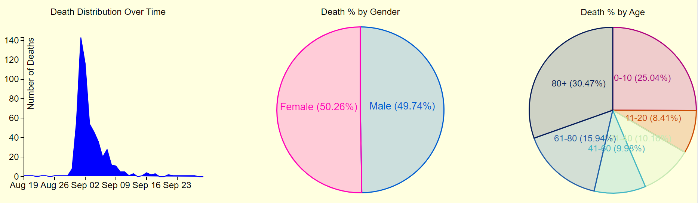
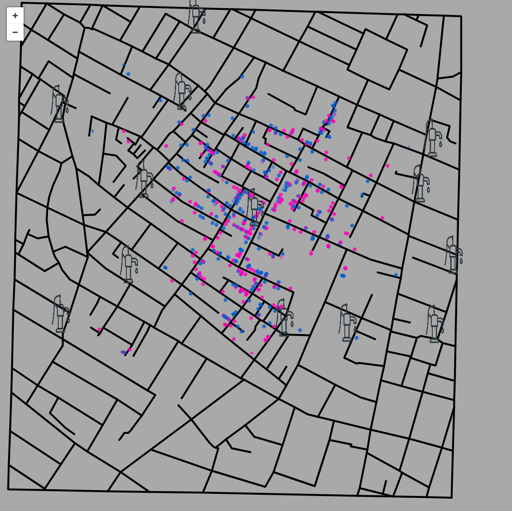
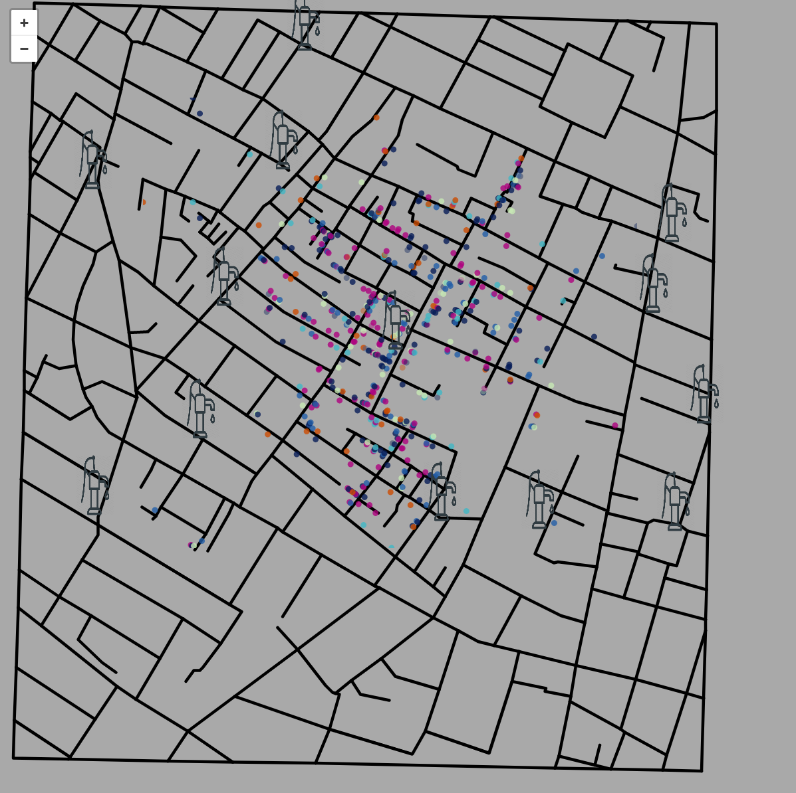

The following is the process that I went through to create this project:
I thoroughly read through the instructions and looked at the datasets that were given to me.
I looked up the original map from Snow to get an idea of what my project would look like.
After seeing this, I knew that I would recreate the streets in an interactive map (similar to Google Maps) with the points plotted according to the dataset.
I looked through the datasets to see what variables I would need to create.
Finally, I knew that I was also going to have to create supporting graphs with more information, so I then thought about colors and the best ways to convey information.
Original map to get started and a modern visualization using Google Maps
Design Rationale
Contrast - Good contrast can make really make certain information pop as well as give a certain feel to a space. I wanted the map to catch the user's attention and then have the bacakground be something more soothing given the topic.
Color - All colors were selected to be compatible with color blindness. As for the colors I chose light blue and pink which are often associated with the gender of a baby and for the ages, I randomly selected colors that were okay for color blind people.
Positioning - The main purpose of this assignment was to display our knowledge of D3 and visualizing Snow's Cholera Map. Therefore, I placed the map at the top to show it off first and then the user can then scroll down to see more information related to the map.

These graphs meet the requirements of the assignment and also complement the map that showcases the main dataset
Questions and Discoveries
Having seen this dataset a few times before, I knew the questions that would have to be answered, which also happened to be required in the assignment. Above are the graphs to the questions. The most insightful of these was the line graph. This graph showed the number of deaths each day and showed just how fast all this took place. If I had more time, I would like to have added a feature that connected the map and the line graph together. When hovering over the line graph, it would be nice to see the people that died on that day on the map. If this feature were to be added, maybe even more questions would arise and lead to even more visualizations.


Most of the data and questions that people might have can be answered by either of these maps
References and Useful Sites for the Creation of my Project